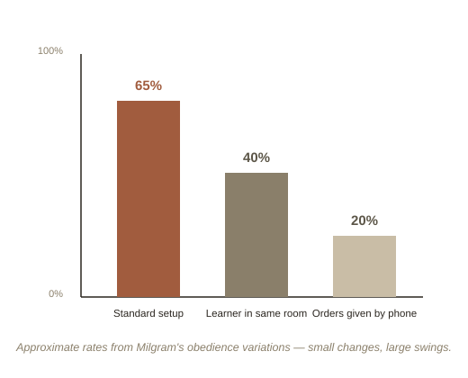

Chapter 1: How Far Would You Go?
In 1961, ordinary volunteers in New Haven, Connecticut walked into a lab believing they were helping test how punishment affects learning. A stern man in a lab coat asked them to deliver electric shocks to another participant every time he got a memory question wrong — shocks that climbed, switch by switch, all the way up to a label reading "450 volts — Danger: Severe Shock." The "other participant" was an actor, and no real shocks were ever delivered. Before running it, psychologist Stanley Milgram asked a panel of psychiatrists to predict how far people would go. Their estimate: maybe one in a thousand would reach the maximum. In reality, roughly two out of every three ordinary participants did.
The experiment that changed how psychology explains cruelty
Milgram ran this study partly to understand the Holocaust — specifically the defense, common at war crimes trials, that perpetrators were "just following orders." His finding reframed the question entirely. It suggested that the capacity to inflict serious harm under authority isn't confined to a rare, disturbed personality type — it's disturbingly available in ordinary people, given the right situational pressure: a legitimate-seeming authority figure, a gradual escalation (each step only slightly worse than the last), and social pressure to keep going once you've already gone partway. None of the participants were monsters going in. Many were visibly distressed, sweating, protesting, even laughing nervously from stress — and still, most kept pressing the switch when the man in the lab coat calmly said "the experiment requires that you continue."

Zimbardo pushed the same question further
A decade later, psychologist Philip Zimbardo ran the Stanford Prison Experiment, randomly assigning college students to play "guards" or "prisoners" in a mock jail built in a university basement. It was meant to run two weeks. Zimbardo shut it down after six days, because several of the "guards" had escalated into genuinely humiliating, psychologically abusive behavior toward the "prisoners" — not because they were selected for cruelty, but seemingly because of the role and the situation itself. Zimbardo's book on this, The Lucifer Effect, argues for what he calls situationism (the view that situational forces, more than fixed personal character, are the main driver of a lot of harmful behavior) over the more comforting assumption that only "bad people" do bad things.
It's worth flagging directly: the Stanford Prison Experiment has faced serious methodological criticism in recent years — including evidence that Zimbardo actively coached some guards toward cruelty rather than the behavior emerging on its own, and that at least one "breakdown" was partly performed to be released early. It's still taught as an important case study in situational power, but no longer treated as the clean, purely emergent result it was once presented as. Milgram's obedience studies, by contrast, have been repeated many times, with broadly consistent results.
Cialdini: the same forces used on purpose, every day
Where Milgram and Zimbardo studied extreme, rare situations, psychologist Robert Cialdini's Influence catalogs the same underlying levers — authority, social proof, commitment — as they show up constantly and deliberately in ordinary persuasion: a salesperson invoking an expert's endorsement, a website flashing "12 people are viewing this," a small initial favor that makes a much bigger later request feel harder to refuse. Cialdini's point is that these aren't obscure lab curiosities; they're everyday tools, used with full awareness of how they work, in marketing, negotiation, and politics.
Try this
Ideas for noticing or testing this in your own life.
- Notice authority in a small decision this week: catch a moment you went along with a request mostly because of who was asking, not because you actually agreed — that's the same lever Milgram studied, at ordinary scale.
- Try naming the persuasion tactic: next time you notice a "12 people are viewing this," a free sample before a big ask, or an appeal to an expert, try identifying which Cialdini principle it's using — naming it often breaks the spell on its own.
Worth pulling on?
A few loose threads from this chapter — if any of these genuinely grab you, that's a good sign of where to go next.
- Milgram's obedience rate dropped sharply under small changes — when the "learner" was in the same room instead of a different one, or when the authority figure gave orders by phone instead of in person, compliance fell dramatically. The situation's exact details, not just "authority" in the abstract, turned out to matter enormously.
- Some of Milgram's participants who refused to continue did so at very specific, personal moments — not from a general principle but because something in that instant broke the spell. Understanding what separates the people who stopped from the two-thirds who didn't remains an active research question. → Ties into Group Dynamics and Crowds — individual resistance to pressure often collapses, or holds, based on what a group around you is doing.
- Cialdini's persuasion principles overlap heavily with the predictable irrationality studied in behavioral economics. → Already in the library: Behavioral Economics covers the decision-making side of exactly this territory.